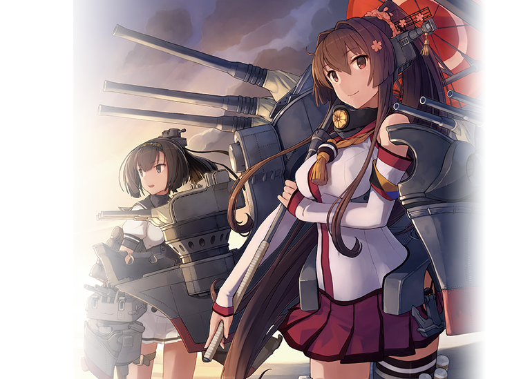
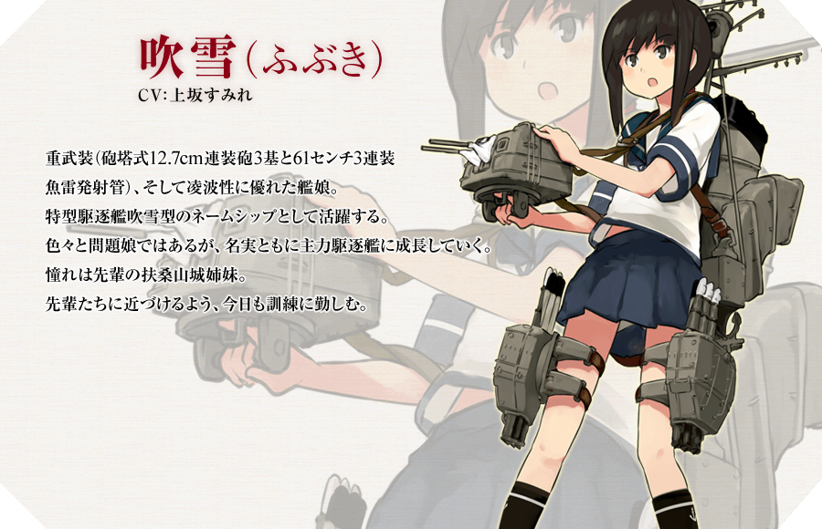
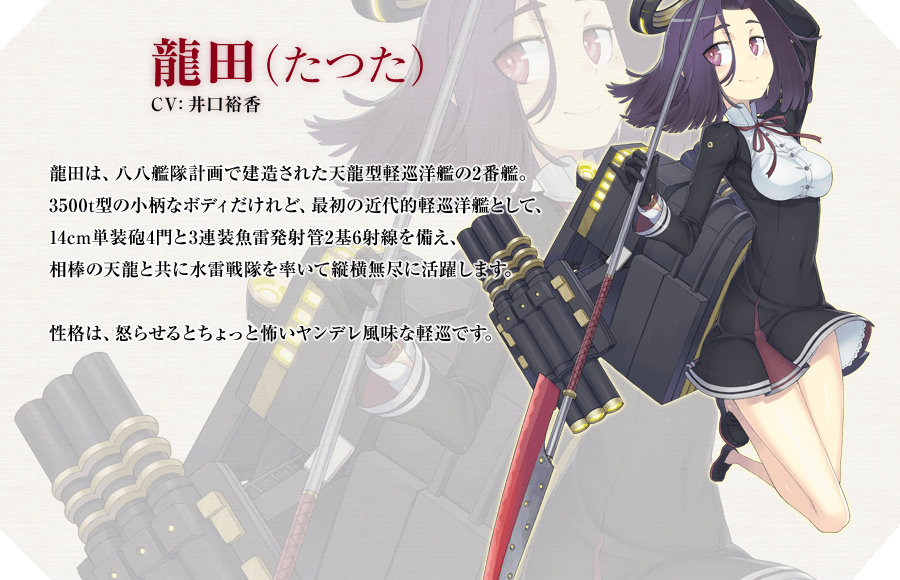
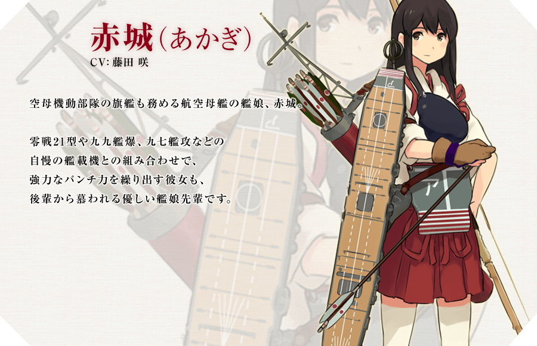
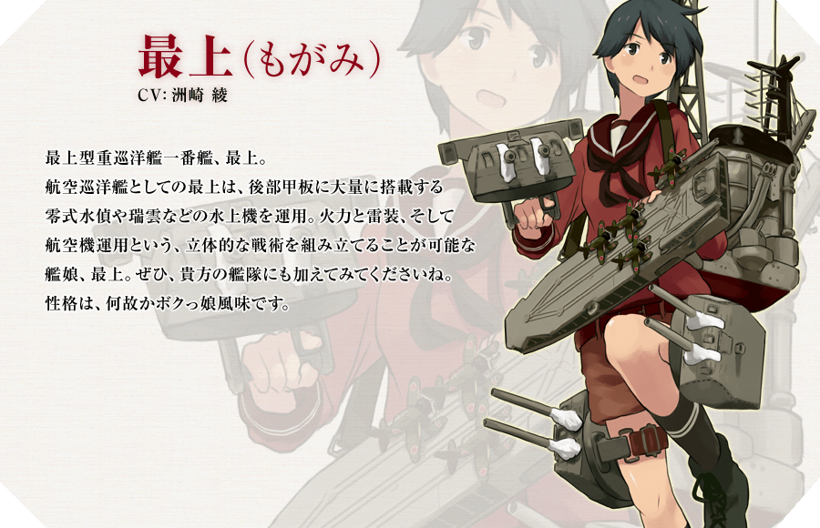
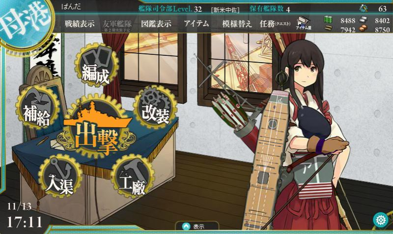
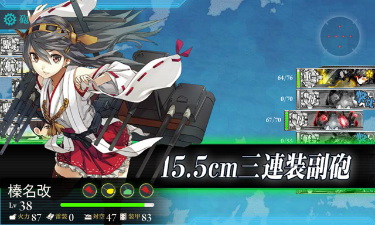

KAN COLLE

Kantai Collection , lit. "Fleet Collection", subtitled as "Combined Fleet Girls Collection"), abbreviated as KanColle, is a Japanese free-to-play web browser game developed by Kadokawa Games. The game was launched on April 23, 2013. As of April 2015, the game is available in Japan only and has 3 million registered players.
Charactars

Fubuki
-Destroyer
In naval terminology, a destroyer is a fast maneuverable long-endurance warship intended to escort larger vessels in a fleet, convoy or battle group and defend them against smaller powerful short-range attackers. They were originally developed in the late 19th century as a defence against torpedo boats, and by the time of the Russo-Japanese War in 1904, these "torpedo boat destroyers" (TBD) were "large, swift, and powerfully armed torpedo boats designed to destroy other torpedo boats."

Tatsuta
-Light cruiser
A light cruiser is a type of small- or medium-sized warship. The term is a shortening of the phrase "light armored cruiser", describing a small ship that carried armor in the same way as an armored cruiser: a protective belt and deck. Prior to this smaller cruisers had been of the protected cruiser model, possessing armored decks only.

Akagi
-Aircraft carrier
An aircraft carrier is a warship that serves as a seagoing airbase, equipped with a full-length flight deck and facilities for carrying, arming, deploying, and recovering aircraft.[1] Typically, it is the capital ship of a fleet, as it allows a naval force to project air power worldwide without depending on local bases for staging aircraft operations. Aircraft carriers are expensive to build and are critical assets. Aircraft carriers have evolved from converted cruisers to nuclear-powered warships that carry numerous fighter planes, strike aircraft, helicopters, and other types of aircraft.

Mogami
-Heavy Cruiser
The heavy cruiser was a type of cruiser, a naval warship designed for long range and high speed, armed generally with naval guns of roughly 203mm calibre (8 inches in caliber) and displacing approximately 10,000 tons. While the general mission of the heavy cruiser to act as a fast scout for a battle fleet and protect and hunt down commerce was largely unchanged from the days of sail, its design parameters were dictated by the Washington Naval Treaty of 1922 and the London Naval Treaty of 1930.
Settings & Screen Shot

Top page of Game. When you get Kanmusu, they will wait you at top page of game. Akagi wait for you.
Butlle in game will keep running automaticaly. You can do else when they fight.

How to Play

①Login to DMM.com

②Access to KanColle page. and push yellow button.
Infomation
Youtube
Twitter
(Japanese)
@KanColle_STAFFさんのツイート